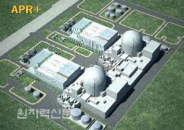

APR+ 원전은 해외기술에 의존하고 있는 일부 핵심기술의 완전한 자립을 통해 독자적 해외수출의 제한 요건을 극복하기 위하여 수립된 ‘원전기술 발전방안(Nu-Tech 2012)’에 따라 개발되었습니다. APR+는 순수 국내기술로 개발됨으로써 수출에 걸림돌이 없는 명실상부한 100% 토종 원전이기도 합니다.
APR1400에서는 해외기술에 의존해야 했던 원자로냉각재펌프(RCP)와 원전계측제어설비(MMIS), 원전설계용핵심코드 등 마지막 미자립 핵심기술을 확보했습니다. APR+는 원자로가 갑자기 정지한 상태에서 원자로냉각에 필요한 전기가 끊겨도 최대 3일간 냉각수가 공급되도록 설계되었습니다.
또한 원자로 노심이 녹아내리는 중대사고가 일어나는 빈도가 기존 원전은 10만년당 1회 미만이지만, APR+는 100만년당 1회 미만으로 설계되었습니다. 또한 원전 제어시스템의 안전기능을 의도적 사이버 공격으로부터 보호하기 위해 국내 규제지침을 기준으로 APR+의 사이버 보안에 대한 설계 기본요건을 설정했습니다.
그리고 발전소의 두뇌에 해당하는 주제어실(Main Control Room)과 원격제어실(Remote Shutdown Room) 등 주요 설비는 항공기 충돌 등 대규모 외부 충격으로부터도 완벽하게 보호될 수 있도록 설계되었습니다. APR+에는 APR1400에 비하여 핵연료봉이 16개가 추가되며 원자로 지름은 30㎝ 커졌습니다. 이처럼 APR+는 발전규모가 커졌지만, 효율성은 한층 높아졌습니다.
한국전력기술은 제한된 기술수준에 머물고 있던, 공기단축의 핵심기술인 SC구조 및 복합모듈에 대한 기술개발에도 많은 노력을 기울였는데, 이에 따라 건설공기가 APR1400보다 1년 단축되었습니다. 또한 화력발전소처럼 전기 생산량을 유연하게 줄일 수 있어 시시각각 변하는 전력수요에 탄력적으로 대응할 수 있는 장점을 지니고 있습니다.
APR+는 우리나라의 제7차 전력수급기본계획에 따라 천지 1,2호기에 첫 적용이 되어 설계중이며, 오는 2028과 2029년에 각각 준공될 예정입니다.
